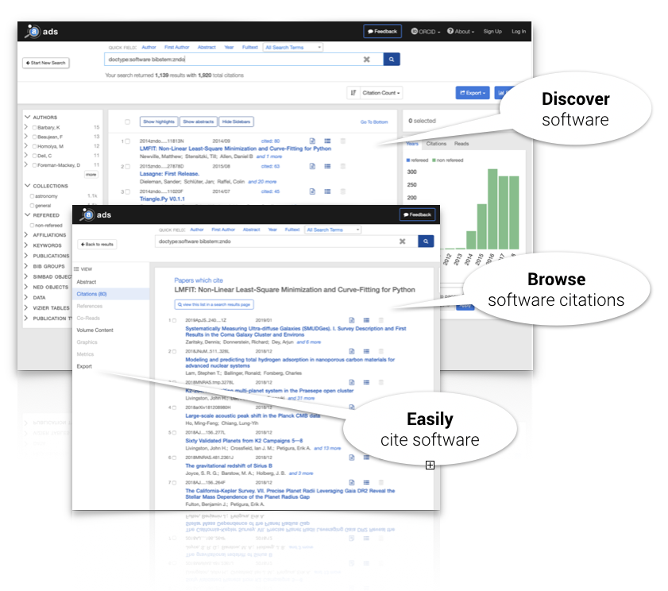
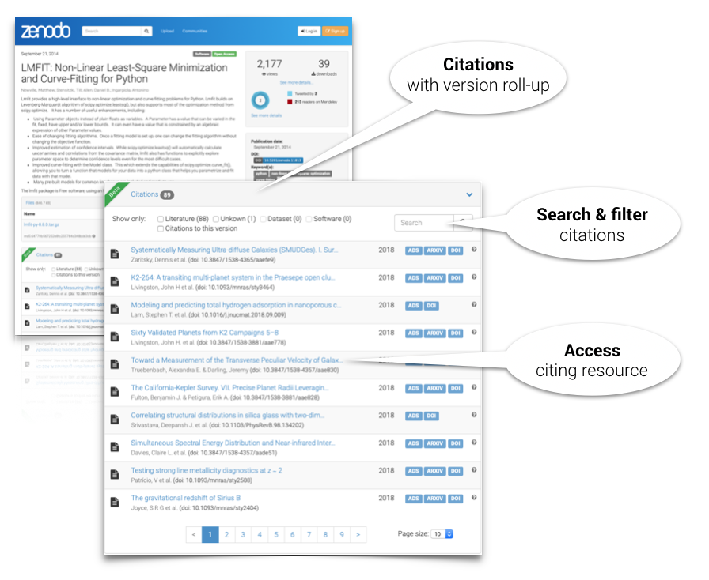
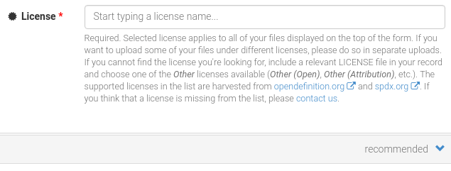

Incident with database infrastructure
by
 Alex Ioannidis
on May 17, 2019
Alex Ioannidis
on May 17, 2019
What happened?
On Thursday May 16 at 08:30 UTC two database instances were accessing the same physical database files (hosted on an NFS filer) for the primary Zenodo database for a short amount of time. This caused a corruption to both the database files as well as the transaction logs. The corruptions caused intermittent errors for users throughout the day, until we at 15:30 UTC took Zenodo offline.
Zenodo was back online 18:30 UTC May 17th.
How did it happen?
On Thursday May 16 at 05:50 UTC the Zenodo database was migrated from an old host to a new host, because of a scheduled urgent intervention on the virtual machine hypervisor hosting the old host.
The script in charge of the migration succeeded but left behind certain configuration files on the old host due to a bug in the script.
At 08:30 UTC the hypervisor and consequently the old host was rebooted. During the boot sequence the old database instance was automatically started and connected to the Zenodo database files and transaction logs hosted on an NFS network filer.
The access by two database instances to the same underlying database files corrupted parts of the files, and most importantly it also corrupted the transactions logs.
Is it fixed?
Through hours of manual validation of the integrity of our 40 million rows large database, as well as validation against our webserver access logs, we have recovered the entire database. We have detected discrepancies in a handful of records, that we have temporarily disabled. We are able to fully recover these records from other sources, and hope to have the work finished during next week.
Is my record affected?
Only a handful of records (98 out of 9200) submitted during the day of May 16th are affected. We have temporarily disabled these records, until we can recover them fully during next week.
If you notice any issues, don't hesitate to contact us via our support page.
Why so long downtime?
Our prime concern is to avoid data loss, so we chose the harder, longer path to recover in order to minimise data loss rather than maximise uptime. Using one of our 12-hourly backups would have meant +6 hours of data loss. The transaction logs were corrupted by the two database instances, which otherwise would have allowed us to recover in about an one hour. All corruptions thus had to be fixed manually by our team of four senior engineers from the CERN database team and Zenodo operations team.
Were my files at risk?
No, the files (the payload of every record) are stored outside the database which only stores the metadata of the records. These files are stored in multiple copies on multiples servers before a new record is completed in the database. However accessing and serving the files requires the database record that points to them.
Next steps
We are taking this incident very seriously and thoroughly investigating what happened and what can be improved to avoid even more failure modes and to make recovery quicker. A post-mortem is planned for next week with the involved teams, after which more will be communicated.
Software citations now available in Zenodo
by
 Lars Holm Nielsen
on January 10, 2019
Lars Holm Nielsen
on January 10, 2019
We are proud to announce the release of enhancements which significantly facilitate scientific software citation and discovery. These represent the successful outcome of the Asclepias project, funded by the Alfred P. Sloan Foundation, and involving the American Astronomical Society, NASA ADS bibliographic index and the Zenodo repository.
NASA Astrophysics Data System
The NASA ADS now extracts and indexes cited software repositories published with the DataCite registry, making them discoverable through its platform and resulting in new metrics for software use and reuse in astronomical research.

Zenodo
Zenodo, using citation brokering software built for the Asclepias project, receives software citations from ADS and other sources, and displays them on the repository's software records.

Discover and cite software
These infrastructure updates provide important new tools for authors of research papers and developers of scientific software.
Authors can now find a wider selection of citable software records in ADS, which can be directly be incorporated into their manuscripts using the ADS tools that astronomers rely upon.
Developers who preserve their software by creating persistent citable entries, e.g. in Zenodo, can discover their software's reuse metrics right on their Zenodo repository's landing page.
Astronomers, who often work across such divisions, can use ADS to track all of their publication and software research outputs.
Tracking citations
ADS and Zenodo rely upon a combination of full-text content from Publishers as well as metadata from the DataCite and CrossRef registries to provide these services. High fidelity indexing and tracking of software objects in the literature is thus dependent on careful, intentional work by developers, authors, and publishers when archiving and citing these digital objects. With these enhancements, ADS and Zenodo now provide citation minting and tracking capabilities which comply with the recommendations of the Force11 software citation implementation working group.
More information:
New (and old) licenses are here!
by
 Alex Ioannidis
on November 22, 2018
Alex Ioannidis
on November 22, 2018
Today, we're pleased to announce the extension of the available selection of licenses that you can apply to your Zenodo uploads. The extra licenses include older and newer versions of existing licenses, as well as completely new entries.

Our database now contains more than 400 licenses that you can search for and select when you create your upload. All these new licenses are coming from SPDX.org, which we have added as another one of the sources we harvest for licenses metadata.
If you are interested in getting a machine-readable extensive list of all the licenses you can do so by accessing our Licenses REST API. If you cannot find the license you want for your new upload, please drop us a message via our support form.